La aplicación de ejemplo 3 (B) 0 es como la solución del ejercicio Bases de datos (3) 5. En todos los ejercicios, la plantilla es como la aplicación de ejemplo 3 (B) 0
Junto con las plantillas se incluyen ficheros .side que permiten la comprobación con Selenium IDE del funcionamiento de la aplicación de ejemplo y de los ejercicios.
Para ayudarle en la realización de estos ejercicios puede consultar una página de comentarios con fragmentos de código.
Puede descargar unas posibles soluciones de estos ejercicios en la página de soluciones.
Bases de datos (3 B) 0 - Aplicación de ejemplo
Esta aplicación es la aplicación que se puede utilizar de base para el resto de ejercicios (es idéntica al ejercicio Bases de datos (3) 5).
Bases de datos (3 B) 1 - Estadísticas de administrador
En este ejercicio se debe ampliar la aplicación proporcionada en la plantilla de manera que el administrador pueda consultar un página con estadísticas de la base de datos (por ejemplo, el número de registros guardados en cada tabla).
Para la comprobación del programa con Selenium, la página de estadísticas debe llamarse "estadisticas.php" y estar guardada en el directorio "administrador".
Los usuarios administradores pueden ver en su menú una nueva opción, "Estadísticas":
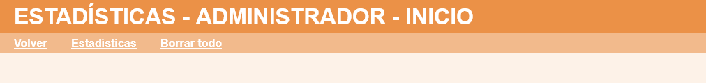
La página de estadísticas muestra el número de registros guardados en cada tabla:
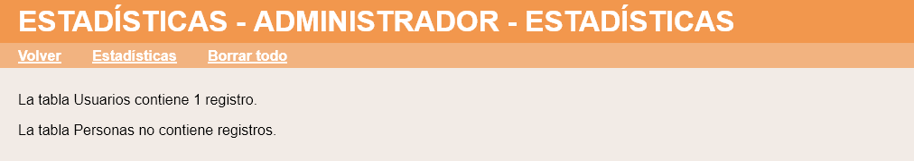
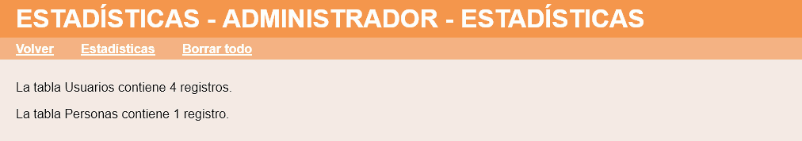
Únicamente los administradores podrán abrir esa página.
Bases de datos (3 B) 2 - Confirmar contraseña
En este ejercicio se debe ampliar la aplicación proporcionada en la plantilla de manera que al crear un nuevo usuario de la aplicación, la contraseña no se muestre en la pantalla al escribirla y en su lugar se solicite dos veces para confirmarla.
Para la comprobación del programa con Selenium, el control en el que se escribe de nuevo la contraseña debe llamarse "password2".
Al crear un nuevo usuario, el formulario no mostrará la contraseña y la pedirá por duplicado:
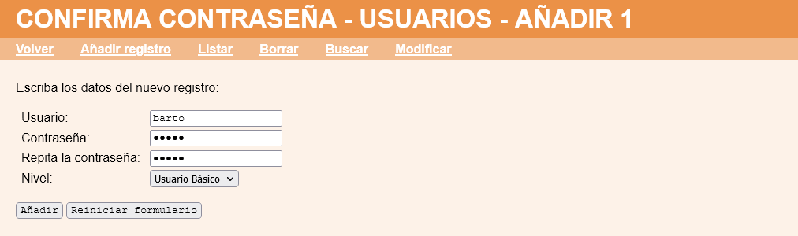
Si las contraseñas no coinciden, se mostrará un mensaje de error:
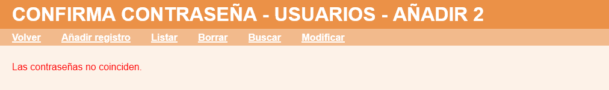
Si la contraseña es demasiado larga, se mostrará un mensaje de error (no dos):
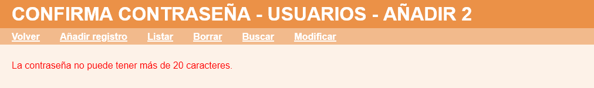
Si todos los datos son correctos, se creará el nuevo usuario:
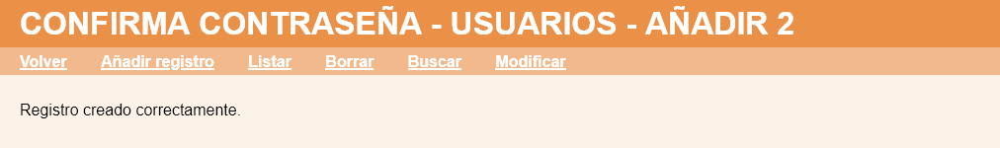
Bases de datos (3 B) 3 - Usuario mirón
En este ejercicio se debe ampliar la aplicación proporcionada en la plantilla de manera que haya un nuevo tipo de usuario que lo único que podrá hacer es ver los registros de personas existentes en la base de datos.
Al crear un nuevo usuario de la aplicación, se ofrecerá la opción "Usuario mirón":
Un usuario mirón debe identificarse como el resto de usuarios de la aplicación:
El usuario mirón sólo tendrá la posibilidad de ver los registros de Personas creadas por el resto de usuarios:
Bases de datos (3 B) 4 - Correo de usuarios
En este ejercicio se debe ampliar la aplicación proporcionada en la plantilla de manera que haya que proporcionar un correo electrónico para cada usuario de la aplicación.
Para la comprobación del programa con Selenium, el control en el que se escribe el correo del usuario debe llamarse "correo" (también se puede llamar así el campo en la tabla Usuarios). La longitud del campo correo debe ser de 50 caracteres.
La aplicación debe funcionar tanto con SQLite como con MariaDB/MySQL. El usuario de MariaDB/MySQL deberá tener su nombre de pila, en minúsculas y sin acentos y ser un usuario con una base de datos de su mismo nombre. Haga una captura de pantalla de la creación del usuario y otra de la vista cuando entra en phpMyAdmin con ese usuario.
Al iniciar la aplicación por primera vez, el usuario root tendrá la dirección de correo root@example.com (la dirección será una variable de configuración):
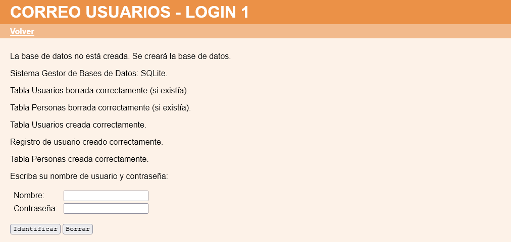
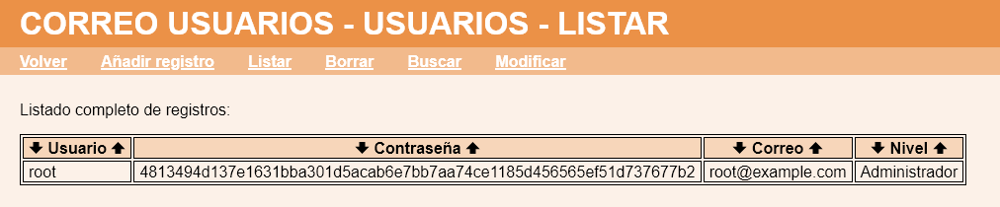
Al borrar todo y elegir el administrador incluir los registros de prueba, estos se crearán con direcciones @example.com:
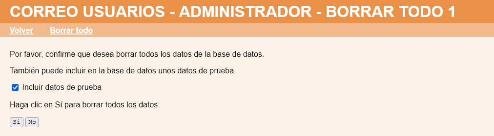
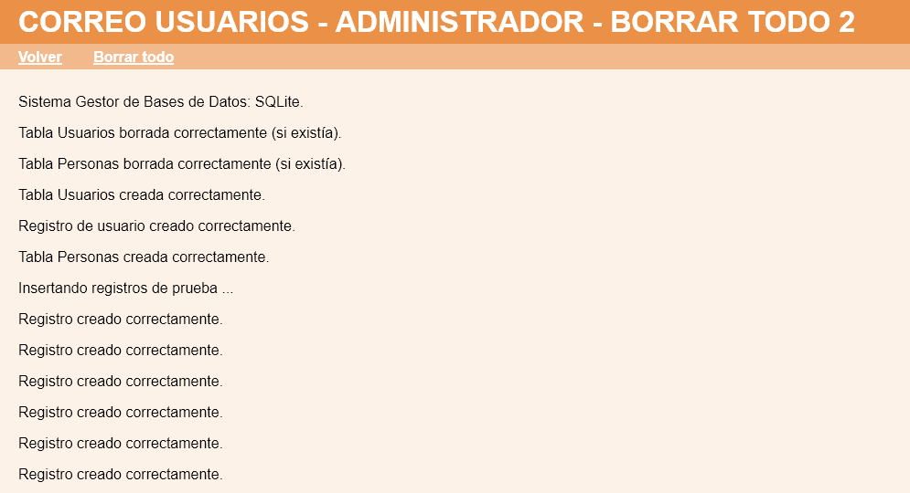
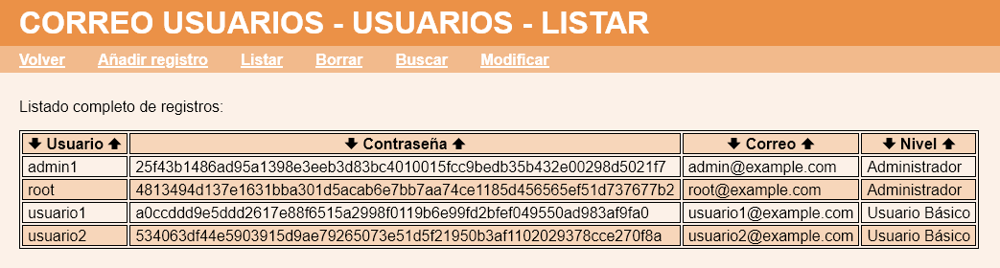
Al crear un nuevo usuario, se solicitará la dirección de correo electrónico (obligatoria):
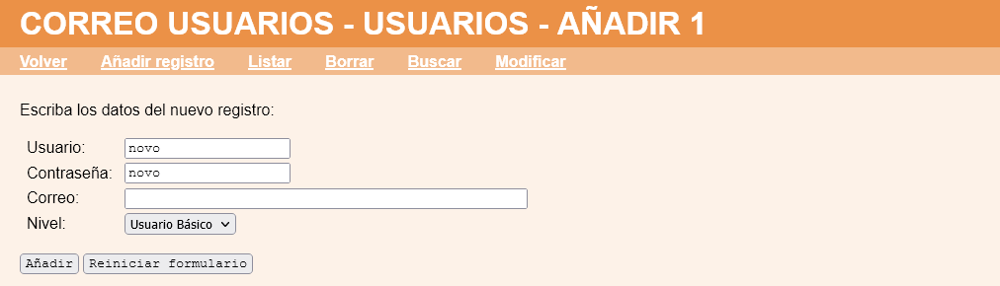
Si no se escribe la dirección de correo electrónico o esta es demasiado larga, se producirá el aviso correspondiente:
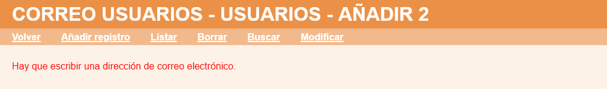
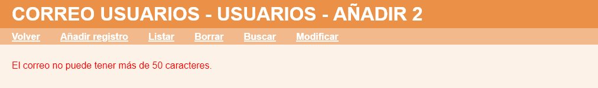
Los usuarios creados se mostrarán en el listado y se podrá ordenar el listado por la dirección de correo:
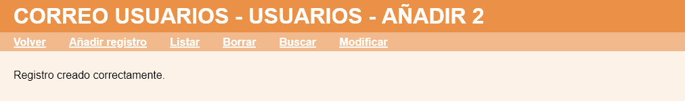
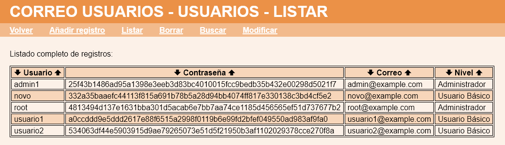
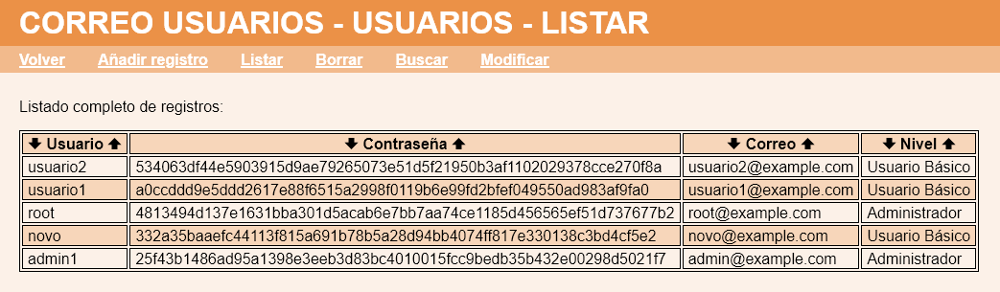
Bases de datos (3 B) 5 - Datos repetidos
En este ejercicio se debe ampliar la aplicación proporcionada en la plantilla de manera que se solicite confirmación si al crear un nuevo registro de Personas, ya existe en la tabla un registro con el mismo correo, teléfono o combinación de nombre y apellidos.
Para la comprobación del programa con Selenium, la página "tabla-personas/insertar-2.php" debe enviar los datos a la página "tabla-personas/insertar-3.php" para su inserción en la base de datos. Los botones Enviar "Sí" y "no" en insertar-2.php deben llamarse "insertar".
Al crear un nuevo usuario, el formulario es el mismo de siempre:
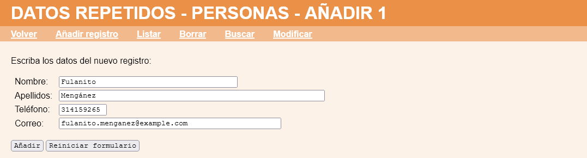
Si el nuevo registro coincide con uno ya existente, se mostrará el aviso de siempre:
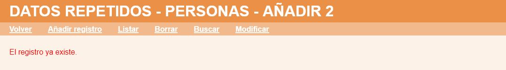
Si el nuevo registro coincide parcialmente con uno ya existente (el mismo correo, el mismo teléfono o la misma combinación de nombre y apellidos), se mostrará un formulario de confirmación:
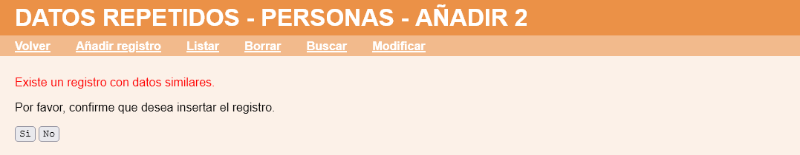
Si se hace clic en No, se volverá a la página index.php:
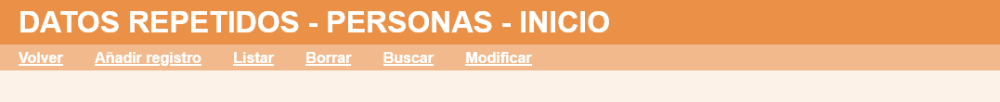
Si se hace clic en Sí, se guardará el registro (haciendo las comprobaciones habituales de la inserción de un registro de Personas):
Bases de datos (3 B) 6 - Registros incompletos
En este ejercicio se debe ampliar la aplicación proporcionada en la plantilla de manera que el menú de personas ofrezca a los usuarios básicos y a los administradores una opción nueva llamada "Incompletos", que mostrará los registros en los que falte algún dato y ofrecerá la posibilidad de completarlos.
Para la comprobación del programa con Selenium, las páginas para seleccionar y completar los registros incompletos de Personas se deben llamar "incompletos-1.php", "incompletos-2.php" e "incompletos-3.php". Los controles se deben llamar como los campos correspondiente de la tabla Personas (como en las páginas de insertar y modificar habituales).
Si no falta ningún dato en ningún registro, se mostrará un aviso:
Si hay registros en los que falta algún dato, se mostrará la lista de ellos:
Al seleccionar un registro, se mostrará un formulario en el que únicamente se podrán rellenar los campos vacíos. Los campos no vacíos deberán guardarse en controles ocultos.
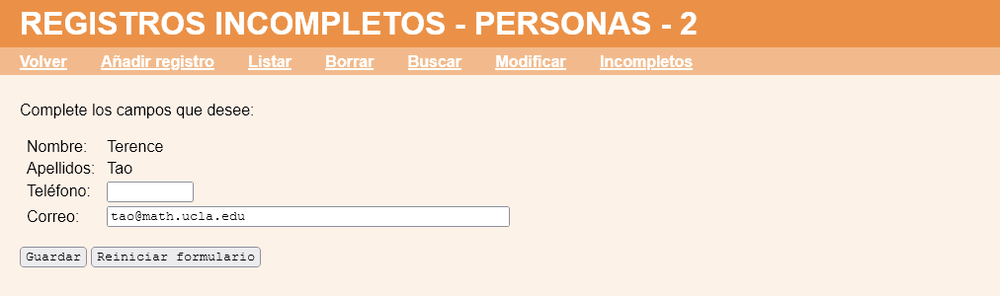
Los nuevos datos se guardarán en la base de datos:
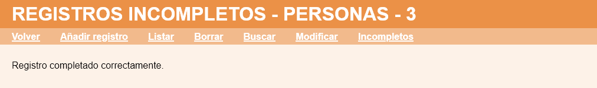
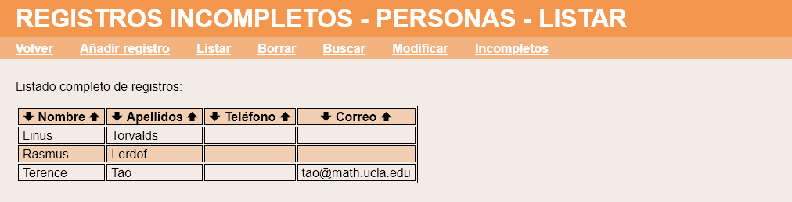
Compruebe el funcionamiento tanto como usuario Administrador como Usuario básico.
Bases de datos (3 B) 7 - Cambiar contraseña
En este ejercicio se debe ampliar la aplicación proporcionada en la plantilla de manera que un usuario pueda cambiar su contraseña.
Para la comprobación del programa con Selenium, las páginas para cambiar la contraseña se deben llamar "password-1.php" y "password-2.php". El control para la nueva contraseña se debe llamar "password".
Los usuarios básicos pueden ver en su menú principal una nueva opción, "Usuarios":
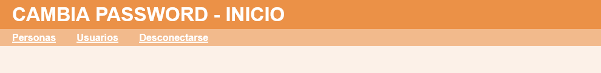
Los usuarios básicos pueden ver en el menú "Usuarios", la opción "Modificar password"":
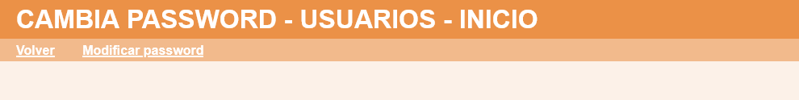
La opción "Modificar password" muestra un formulario en el que se puede escribir la nueva contraseña:
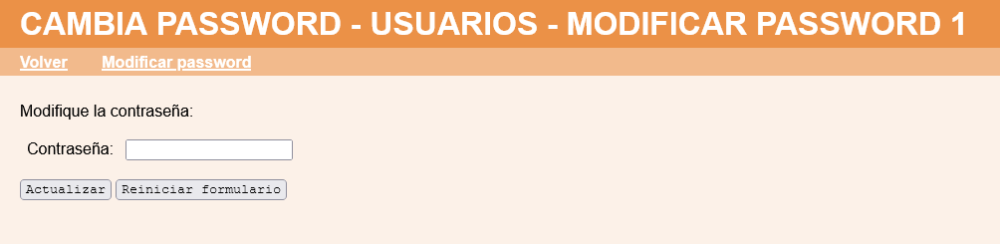
Si no hay motivos para dar un mensaje de error, se modificará la contraseña:
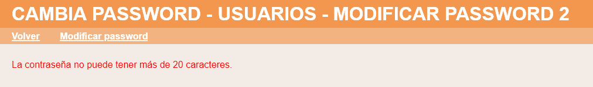
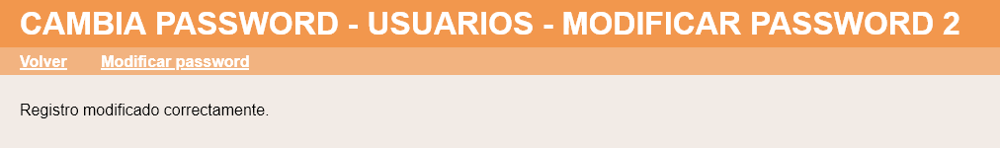
Compruebe que el usuario ha cambiado la contraseña, saliendo de la aplicación y entrando con la nueva contraseña
Bases de datos (3 B) 8 - Contador de número de conexiones
En este ejercicio se debe ampliar la aplicación proporcionada en la plantilla de manera que se lleve la cuenta del número de conexiones que ha realizado cada usuario y se le avise cuando el número de conexiones supere un valor de configuración predefinido.
Para la comprobación del programa con Selenium, el control en el que se escribe el número de conexiones debe llamarse "conexiones" (también se puede llamar así el campo en la tabla Usuarios).
La aplicación debe funcionar tanto con SQLite como con MariaDB/MySQL. El usuario de MariaDB/MySQL deberá tener su nombre de pila, en minúsculas y sin acentos y ser un usuario con una base de datos de su mismo nombre. Haga una captura de pantalla de la creación del usuario y otra de la vista cuando entra en phpMyAdmin con ese usuario.
Al iniciar la aplicación por primera vez, el usuario root tendrá como número de conexiones el valor 0. La variable de configuración que contiene el valor a partir del cual se avisará a los usuarios se puede llamar $cfg["numeroConexionesAviso"], cuyo valor puede ser 3:
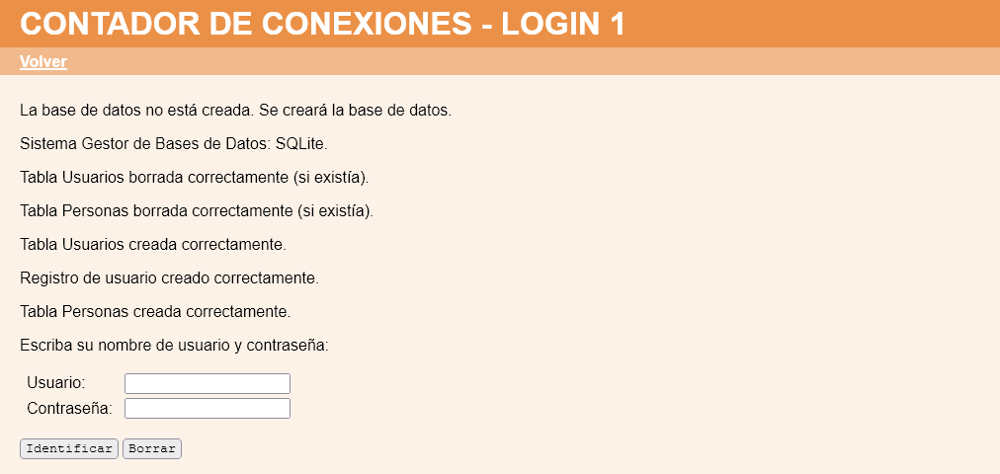
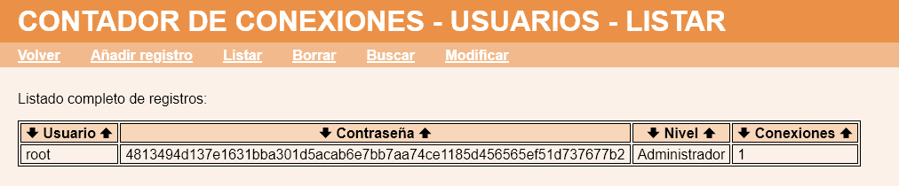
Al borrar todo y elegir el administrador incluir los registros de prueba, el número de conexiones de todos los usuarios será cero:
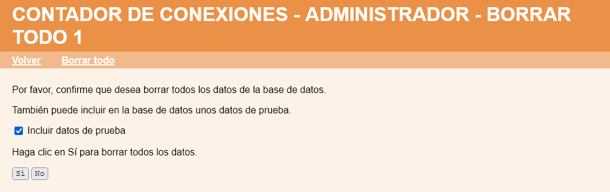
Al conectarse y desconectarse los usuarios, se actualizarán los contadores de cada usuario:
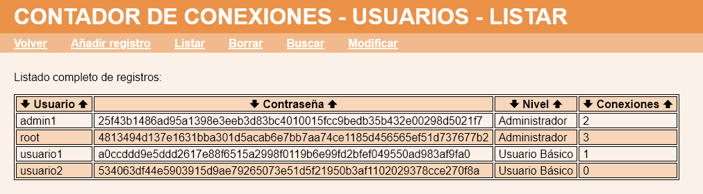
El listado de usuario se podrá ordenar por el campo Número de conexiones:
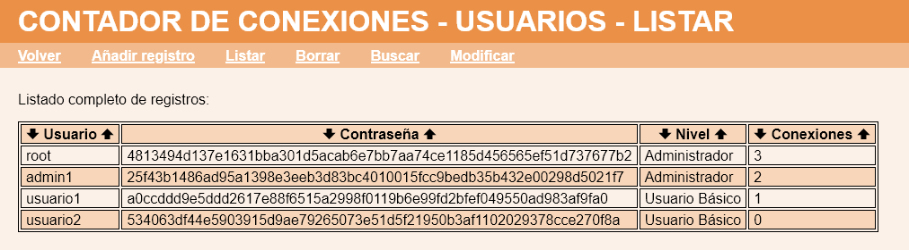
Si el número de conexiones ha superado el valor predefinido, se mostrará un aviso al realizarse la conexión:
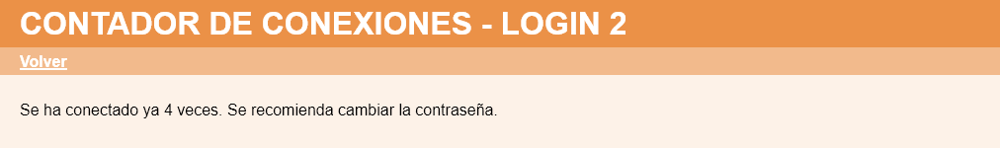
El aviso se mostrará sea siempre una vez superado el número de conexiones predefinidas:
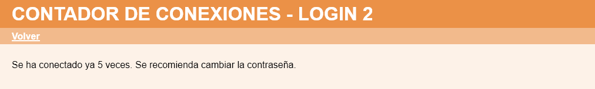
Al cambiar el nombre de usuario, la contraseña o el nivel de un usuario, el contador de conexiones se volverá a poner a cero.
Bases de datos (3 B) 9 - Número máximo de registros por usuario
En este ejercicio se debe ampliar la aplicación proporcionada en la plantilla de manera que el número máximo de registros se establezca por usuario.
Nota: la aplicación no identifica al usuario que ha creado el registro de persona, por lo que el número máximo de registros se debe comparar con el total de registros de personas, independientemente de qué usuario los haya creado.
Para la comprobación del programa con Selenium, el control en el que se escribe el número máximo de registros debe llamarse "registros" (también se puede llamar así el campo en la tabla Usuarios).
La aplicación debe funcionar tanto con SQLite como con MariaDB/MySQL. El usuario de MariaDB/MySQL deberá tener su nombre de pila, en minúsculas y sin acentos y ser un usuario con una base de datos de su mismo nombre. Haga una captura de pantalla de la creación del usuario y otra de la vista cuando entra en phpMyAdmin con ese usuario.
Al iniciar la aplicación por primera vez, el usuario root tendrá como número máximo de registros la variable de configuración $cfg["tablaPersonasMaxReg"]:
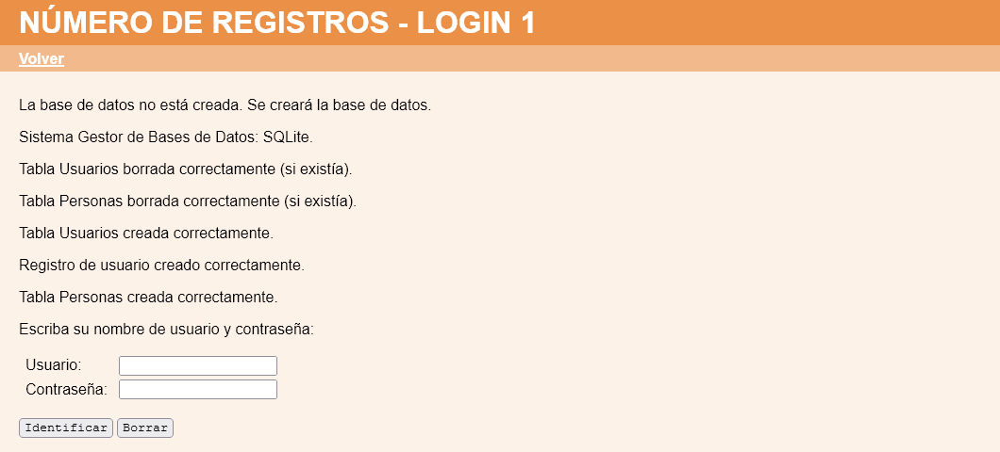
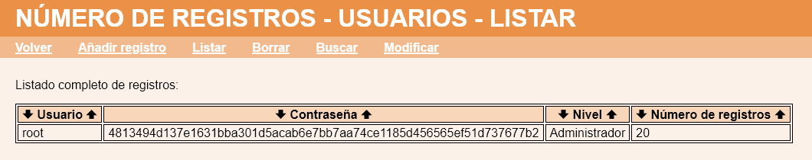
Al borrar todo y elegir el administrador incluir los registros de prueba, estos se crearán cada uno con un número máximo de registros distinto:
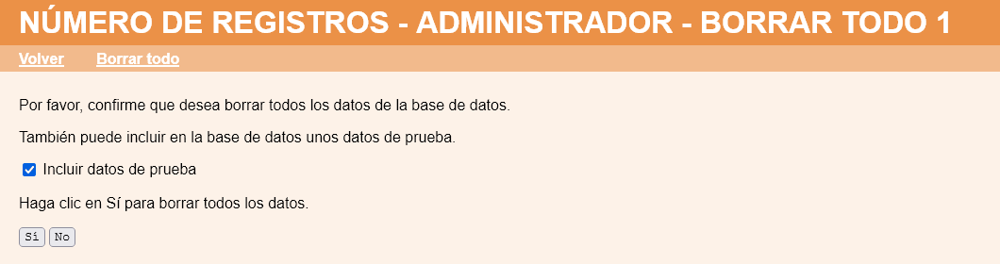
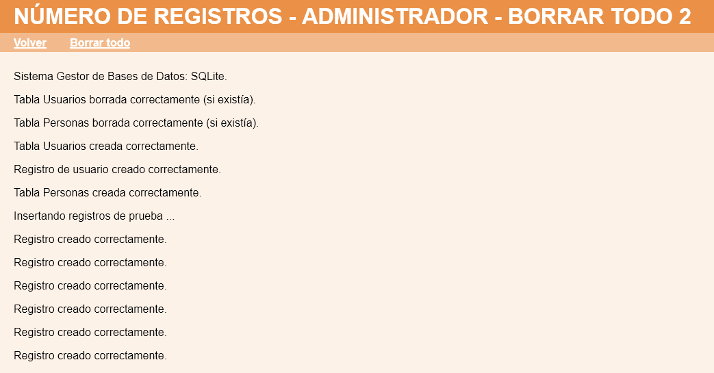
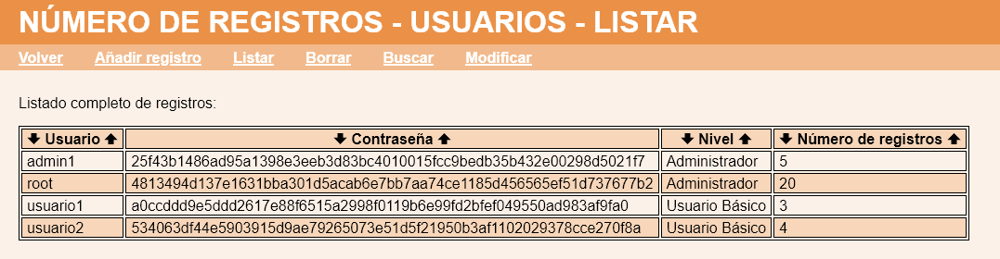
Al crear un nuevo usuario, se solicitará un número máximo de registros (obligatorio):
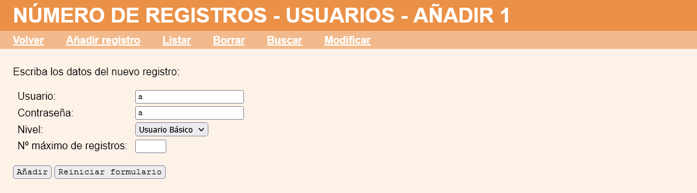
Si no se escribe un valor, se producirá el aviso correspondiente:
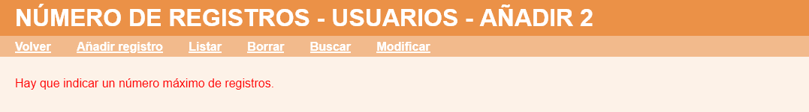
Los usuarios creados se mostrarán en el listado y se podrá ordenar el listado por el número máximo de registros:
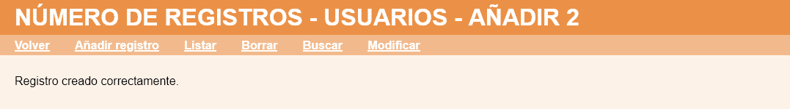
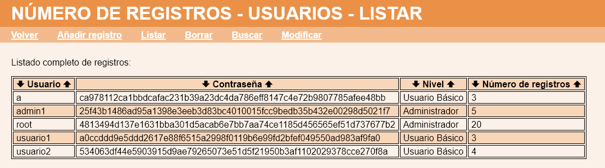
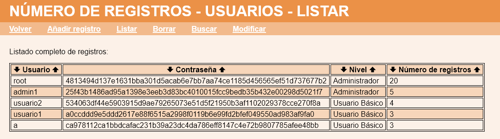
Un usuario no puede crear un nuevo registro de Personas si el número de registros es mayor o igual que su número máximo, como le ocurriría al usuario "a" de estos ejemplos ya que su límite es 3 y los registros de prueba incluyen tres personas: